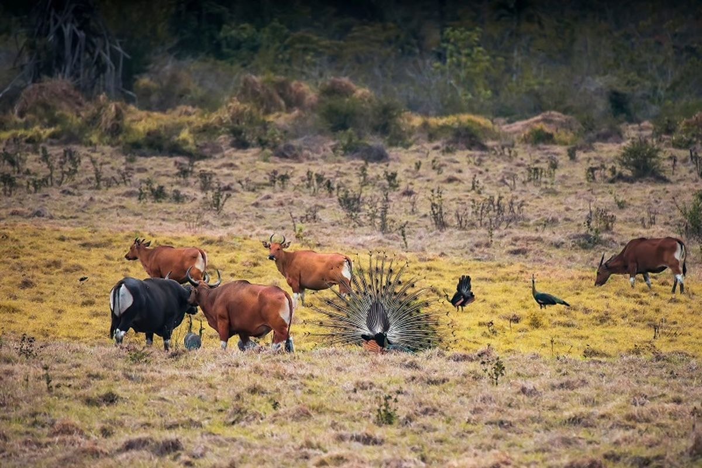
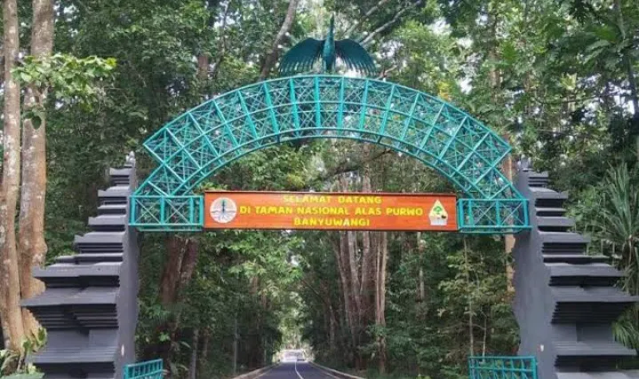
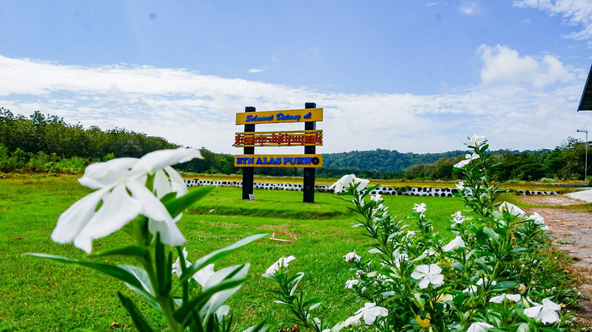
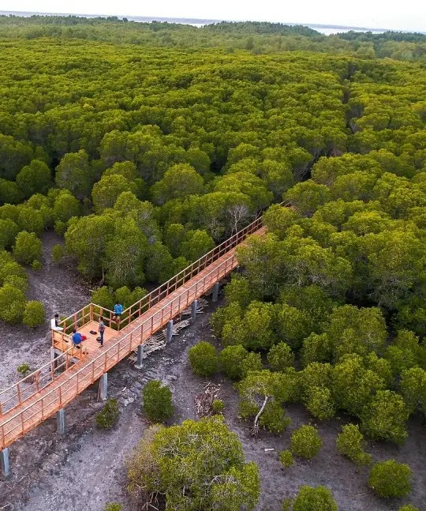

Alas Purwo
Taman Nasional di ujung timur Jawa dengan savana, pantai, dan hutan yang masih alami.
Galeri Foto






Informasi Detail
Alas Purwo adalah taman nasional yang terletak di ujung timur Pulau Jawa, tepatnya di Kabupaten Banyuwangi, Jawa Timur. Taman ini memiliki luas sekitar 43.750 hektar dan merupakan salah satu kawasan konservasi alam yang penting di Indonesia.
Keunikan Alas Purwo
- Savana yang luas: Menyajikan pemandangan savana yang menyerupai padang rumput Afrika, menjadi habitat bagi berbagai satwa liar.
- Pantai-pantai eksotis: Memiliki beberapa pantai indah seperti Pantai Grajagan, Pantai Merah, dan Pantai Teluk Hijau.
- Hutan primer: Menyimpan keanekaragaman hayati yang tinggi dengan flora dan fauna yang masih asli.
- Spot foto Instagramable: Berbagai spot fotografi dengan latar belakang alam yang spektakuler.
Aktivitas yang Bisa Dilakukan
- Menikmati sunrise dari bukit-bukit savana
- Snorkeling dan diving di pantai-pantai berpasir putih
- Mengamati satwa liar seperti rusa, banteng, dan burung-burung langka
- Tracking di hutan primer untuk menikmati keindahan alam
- Photography dengan latar belakang alam yang dramatis
Info Praktis
- Lokasi: Ujung timur Pulau Jawa, Kabupaten Banyuwangi, Jawa Timur
- Biaya Masuk: Rp 20.000 per orang (untuk wisatawan domestik)
- Waktu Terbaik Berkunjung: Bulan April hingga Oktober (musim kemarau)
- Transportasi: Dapat dijangkau dengan mobil atau motor dari kota Banyuwangi (sekitar 2-3 jam perjalanan)
- Akomodasi: Tersedia penginapan sederhana di dalam kawasan taman nasional
Peraturan Kunjungan
- Dilarang merusak lingkungan dan membuang sampah sembarangan
- Dilarang memberi makan satwa liar
- Harap tetap di jalur yang ditentukan saat tracking
- Bawa perlengkapan cukup (air minum, obat-obatan, pakaian hangat)
- Disarankan membawa guide lokal untuk pengalaman lebih baik